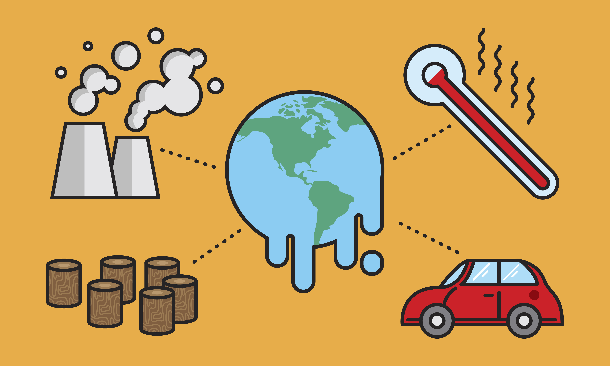
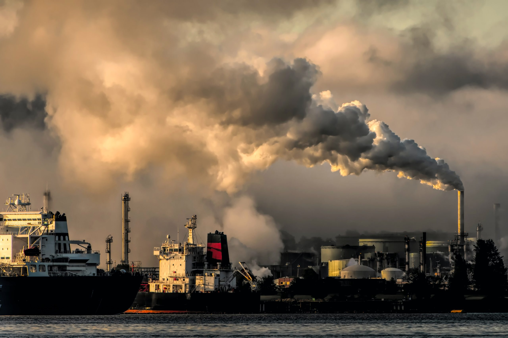
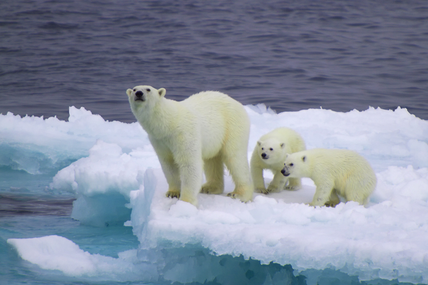
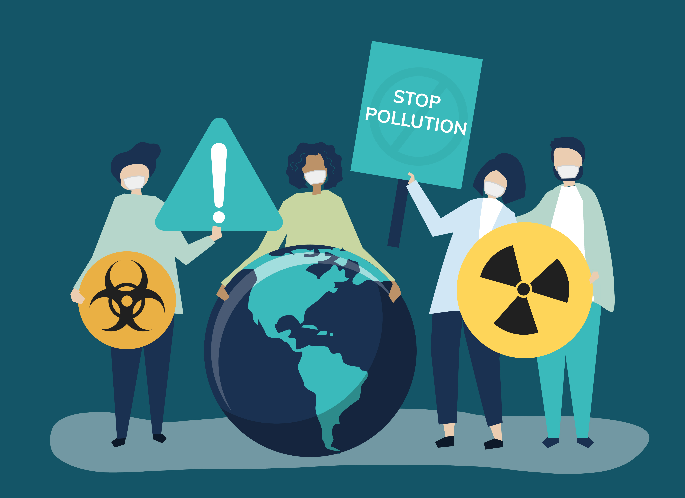

Aquecimento global é o aumento da temperatura média dos oceanos e da camada de ar próxima
à superfície da Terra que pode ser consequência de causas naturais e atividades humanas.
Isto se deve principalmente ao aumento das emissões de gases na atmosfera que causam o efeito
estufa, principalmente o dióxido de carbono (CO2).

O Efeito estufa corresponde a uma camada de gases que cobre a superfície da terra, essa
camada composta principalmente por gás carbônico (CO²), metano (CH4), N²O (óxido nitroso)
e vapor d água, é um fenômeno natural fundamental para manutenção da vida na Terra, pois
sem ela o planeta poderia se tornar muito frio, inviabilizando a sobrevivência de diversas espécies.
As mudanças climáticas podem ter causas naturais como alterações na radiação solar e dos
movimentos orbitais da Terra ou podem ser consequência das atividades humanas.
O Painel Intergovernamental de Mudanças Climáticas (IPCC), órgão das Nações Unidas, responsável
por produzir informações científicas, afirma que há 90% de certeza que o aumento de
temperatura na Terra está sendo causado pela ação do homem.
Entre as principais atividades humanas que causam o aquecimento global e consequentemente as
mudanças climáticas, a queima de combustíveis fósseis (derivados do petróleo, carvão mineral e gás natural)
para geração de energia, atividades industriais e transportes; conversão do uso do solo; agropecuária;
descarte de resíduos sólidos (lixo) e desmatamento. Todas estas atividades emitem grande quantidade de CO² e
de gases formadores do efeito estufa.
No Brasil, as mudanças do uso do solo e o desmatamento são responsáveis pela maior parte das nossas
emissões e faz o país ser um dos líderes mundiais em emissões de gases de efeito estufa. Isto porque
as áreas de florestas e os ecossistemas naturais são grandes reservatórios e sumidouros de carbono por sua
capacidade de absorver e estocar CO². Mas quando acontece um incêndio florestal ou uma área é desmatada,
esse carbono é liberado para a atmosfera, contribuindo para o efeito estufa e o aquecimento global.
Mas as emissões de GEE por outras atividades como agropecuária e geração de energia vem aumentando
consideravelmente ao longo dos anos.

São várias as consequências do aquecimento global e algumas
delas já podem ser sentidas em diferentes partes do planeta.
Os cientistas já observam que o aumento da temperatura média do
planeta tem elevado o nível do mar devido ao derretimento das calotas polares,
podendo ocasionar o desaparecimento de ilhas e cidades litorâneas densamente povoadas.
E há previsão de uma frequência maior de eventos extremos climáticos
(tempestades tropicais, inundações, ondas de calor, seca, nevascas, furacões,
tornados e tsunamis) com graves consequências para populações humanas e ecossistemas
naturais, podendo ocasionar a extinção de espécies de animais e de plantas.

Existem várias maneiras de reduzir as emissões dos gases de efeito estufa e os efeitos
no aquecimento global. Diminuir o desmatamento, investir no reflorestamento e na conservação
de áreas naturais, incentivar o uso de energias renováveis não convencionais (solar, eólica,
biomassa e Pequenas Centrais Hidrelétricas), preferir utilizar biocombustíveis (etanol, biodiesel)
a combustíveis fósseis (gasolina, óleo diesel), investir na redução do consumo de energia e na
eficiência energética, reduzir, reaproveitar e reciclar materiais, investir em tecnologias de
baixo carbono, melhorar o transporte público com baixa emissão de GEE, são algumas das possibilidades.
E estas medidas podem ser estabelecidas através de políticas nacionais e internacionais de clima.
